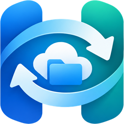

HunSync
Google Drive mappák szinkronizálása macOS-re
A HunSync macOS menüsor-alkalmazás. A felhasználó Google Drive megosztási linkeket ad meg, mindegyikhez egy helyi mappát, az alkalmazás pedig letölti a linken elérhető fájlokat, és beállítható időközönként frissen tartja őket.
Funkciók
- Nyilvános Google Drive fájlok és mappák letöltése, almappákkal együtt.
- Google-fiókkal bejelentkezve a felhasználóval megosztott mappák is (csak olvasási hozzáférés).
- Linkenként saját célmappa és frissítési időköz.
- Csak a megváltozott fájlok töltődnek le újra; helyi fájlt nem töröl.
English
HunSync is a macOS menu bar app that downloads the contents of Google Drive share links into local folders and keeps them up to date. Signing in with Google (read-only access) lets it sync folders shared with the user.